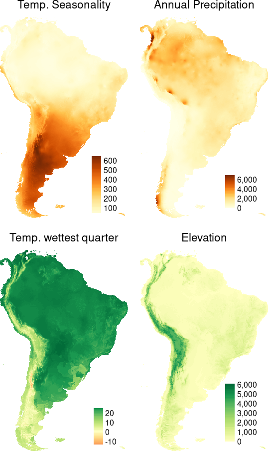
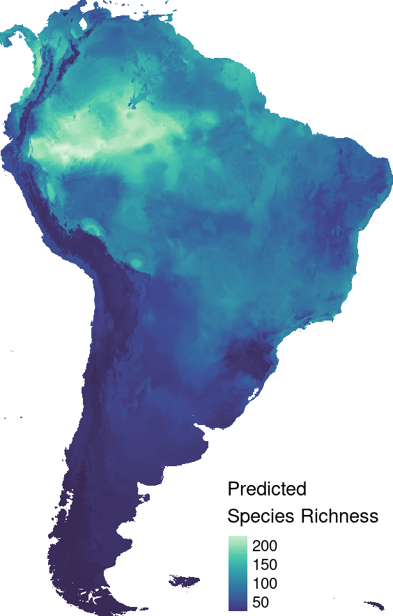
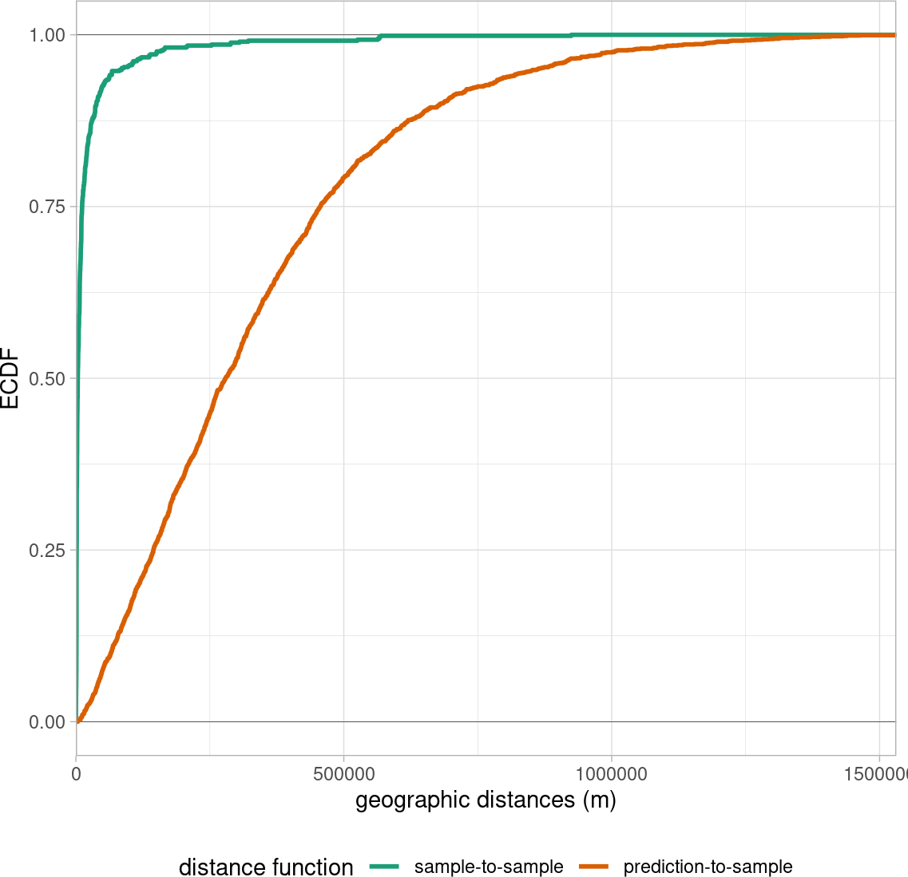
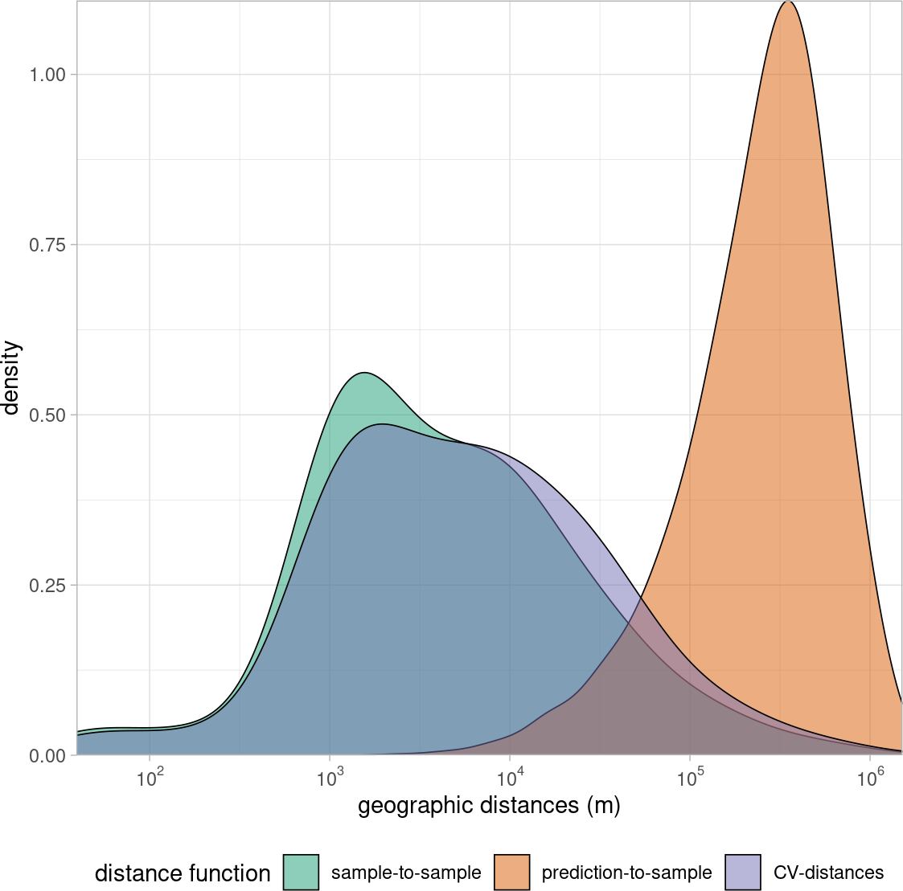
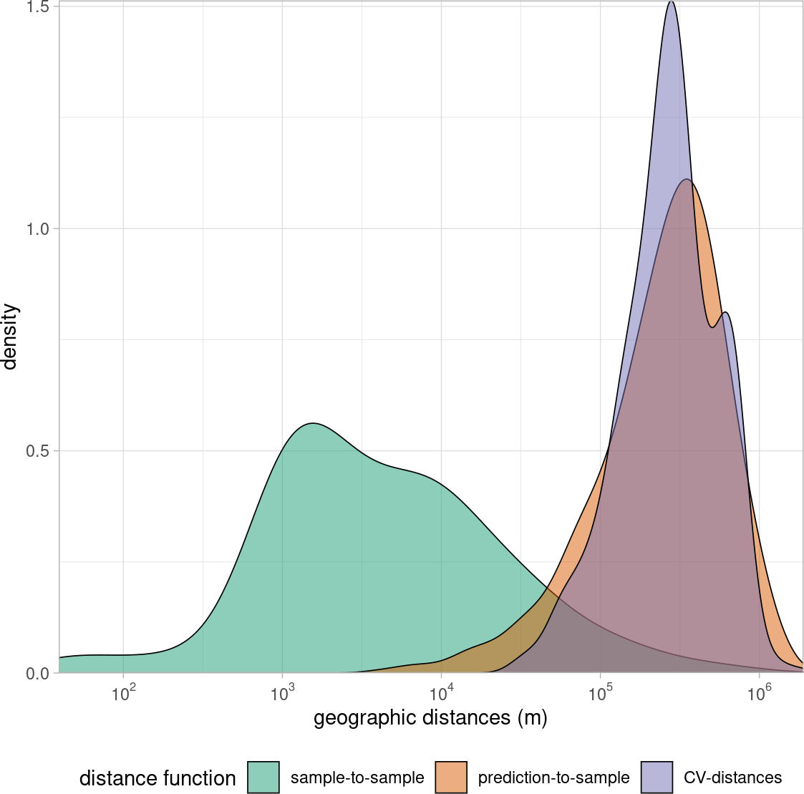
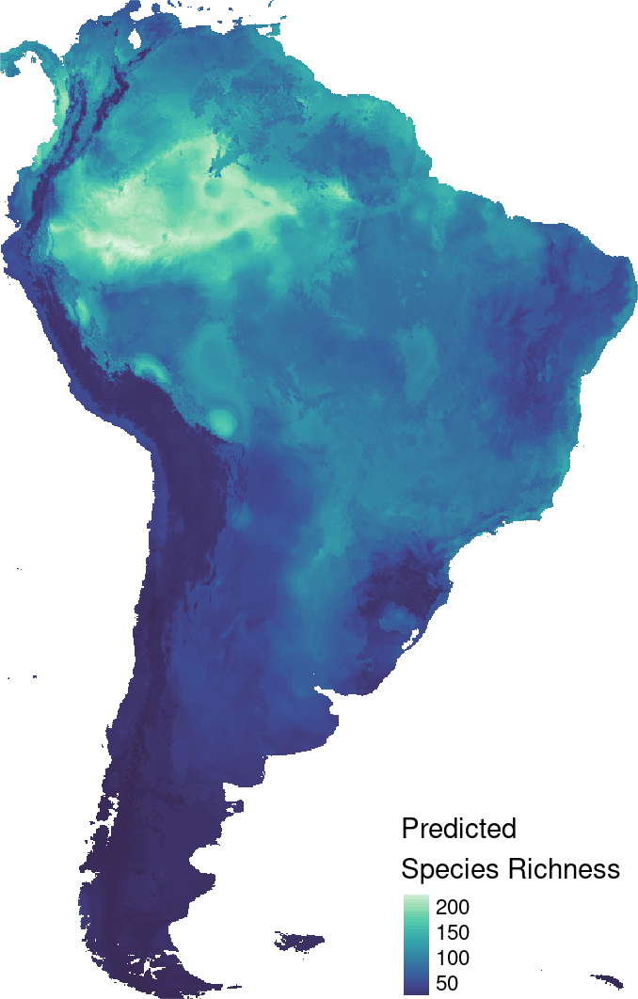
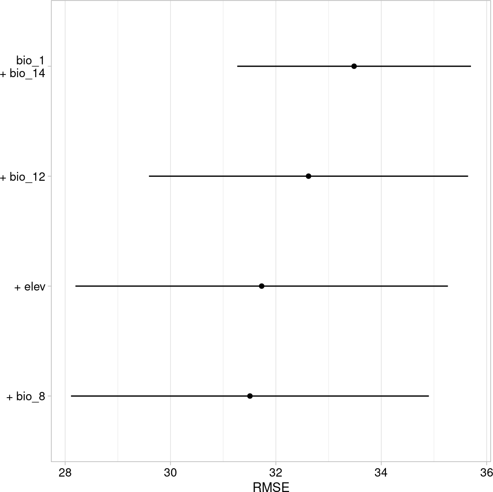
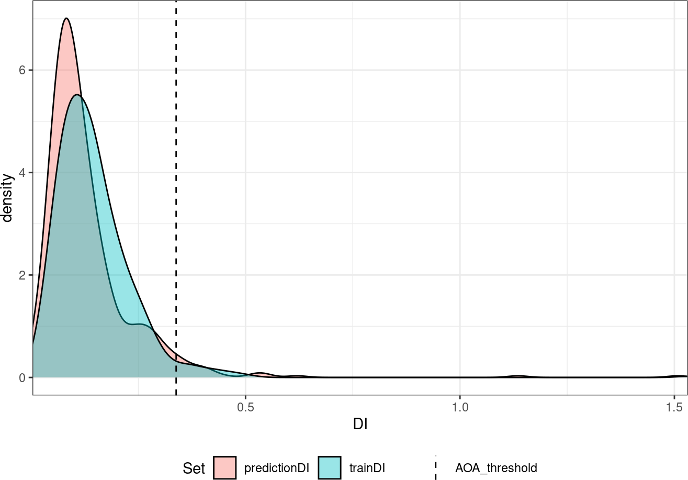
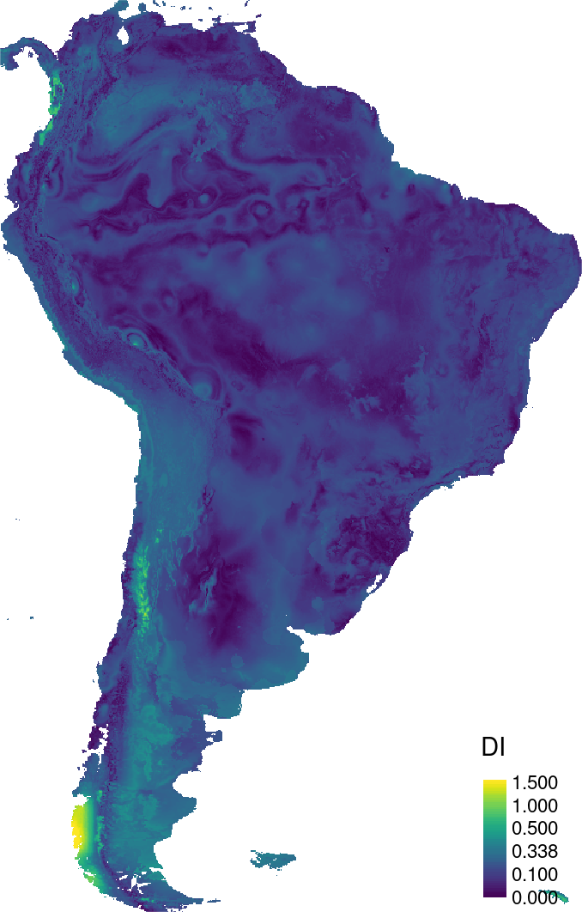

# for (spatial) data handling
library(terra)
library(sf)
library(tidyverse)
# modelling
library(caret)
library(CAST)
library(ranger)
# visuals
library(tmap)
library(viridis)
library(scales)
library(ggpubr)CAST4Ecology Modelling Tutorial
This is a reproducible code to create the figures of the book chapter CAST4Ecology.
Preparations
Needed R Packages
Example data
## Wording:
# training_data: reference samples without coordinates
# predictors: spatially continuous predictor stack of South America
# modeldomain: where we want to predict (the outline of South America)
# predictor_names: names of predictors in the training_data and the predictor stack
# response_name: name of the response variable in plots
data(splotdata) # load reference samples (example data from the CAST package)
predictors <- rast("data/predictors.tif")
training_data <- splotdata |> st_drop_geometry() # reference samples without coordinates
modeldomain <- st_read("data/modeldomain.gpkg", quiet = TRUE)
predictor_names <- names(predictors)
response_name <- "Species_richness"
# define color palette
Okabe_Ito <- c("#E69F00", "#56B4E9", "#009E73", "#F0E442", "#CC79A7") tm_shape(modeldomain)+
tm_borders()+
tm_shape(splotdata)+
tm_symbols(col = "Species_richness", style = "cont",
legend.col.reverse = TRUE,
palette = plasma(50, direction = -1),
size = 0.2, title.col = "Species richness")+
tm_layout(frame = FALSE)p = predictors[[c("bio_4", "bio_12", "bio_8", "elev")]]
names(p) = c("Temp. Seasonality", "Annual Precipitation", "Temp. wettest quarter", "Elevation")
tm_shape(p)+
tm_raster(style = "cont", title = "", legend.reverse = TRUE)+
tm_facets(free.scales = TRUE, ncol = 2)+
tm_layout(legend.position = c("right", "bottom"),
legend.just = "left",
panel.show = TRUE,
panel.labels = names(p),
panel.label.bg.color = NA,
frame.lwd = NA,
frame = FALSE)
A first simple prediction model
set.seed(6502)
rfmodel_rcv <- caret::train(x = training_data |> select(all_of(predictor_names)),
y = training_data |> pull(response_name),
method = "ranger",
num.trees = 100,
trControl = trainControl(method = "cv",
savePredictions = TRUE))
prediction_rcv <- predict(predictors, rfmodel_rcv, na.rm = TRUE)tm_shape(prediction_rcv)+
tm_raster(title = "Predicted \nSpecies Richness", style = "cont",
palette = mako(50, begin = 0.2),
legend.reverse = TRUE)+
tm_layout(legend.position = c("right", "bottom"),
legend.just = "left",
frame = FALSE)
Cross-validation to estimate the map accuracy
geo_distance = geodist(splotdata, modeldomain)
plot(geo_distance) +
scale_y_continuous(expand = c(0,0))+
scale_x_continuous(expand = c(0,0),
trans = "log10",
labels = trans_format("log10", math_format(10^.x)))+
theme_light()+
theme(legend.position = "bottom")
plot(geo_distance, stat = "ecdf")+
scale_x_continuous(expand = c(0,0))+
theme_light()+
theme(legend.position = "bottom")

Setting up knndm-cv
- setting up cv folds such that between-folds distance matches sample-prediction distance
- cv more representative of actual prediction task
knndm_folds = CAST::knndm(tpoints = splotdata,
modeldomain = modeldomain, k = 5)
splotdata$fold = knndm_folds$clusters
splotdata$random_fold = sample(seq(5),
size = nrow(splotdata),
replace = TRUE) ## imitating a random 5 fold cross validationtm_shape(modeldomain)+
tm_borders()+
tm_shape(splotdata)+
tm_symbols(col = "random_fold", style = "cat",
legend.col.reverse = FALSE,
palette = Okabe_Ito,
size = 0.2, title.col = "Random Folds",
legend.col.is.portrait = FALSE)+
tm_layout(frame = FALSE)gd_rcv <- geodist(splotdata,
modeldomain,
cvfolds = splotdata$random_fold)
plot(gd_rcv, stat = "density") +
scale_y_continuous(expand = c(0,0))+
scale_x_continuous(expand = c(0,0),
trans = "log10",
labels = trans_format("log10", math_format(10^.x)))+
theme_light()+
theme(legend.position = "bottom")
plot(gd_rcv, stat = "ecdf") +
scale_x_continuous(limits = c(0,1500000), expand = c(0,0))+
theme_light()+
theme(legend.position = "bottom")
tm_shape(modeldomain)+
tm_borders()+
tm_shape(splotdata)+
tm_symbols(col = "fold", style = "cat",
legend.col.reverse = FALSE,
palette = Okabe_Ito,
size = 0.2, title.col = "knndm Folds",
legend.col.is.portrait = FALSE)+
tm_layout(frame = FALSE)gd_knndm <- geodist(splotdata,
modeldomain,
cvfolds = splotdata$fold)
plot(gd_knndm, stat = "density") +
scale_y_continuous(expand = c(0,0))+
scale_x_continuous(expand = c(0,0),
trans = "log10",
labels = trans_format("log10", math_format(10^.x)))+
theme_light()+
theme(legend.position = "bottom")
plot(gd_knndm, stat = "ecdf")+
scale_x_continuous(limits = c(0,1500000))+
theme_light()+
theme(legend.position = "bottom")
Random Forest Model with knndm-cv
tr_control <- trainControl(method = "cv",
number = 5,
index = knndm_folds$indx_train,
savePredictions = TRUE)
set.seed(51)
rfmodel_knndmcv <- caret::train(x = training_data[,predictor_names],
y = training_data[,response_name],
method = "ranger",
num.trees = 100,
trControl = tr_control)Spatial model tuning and feature selection
- simplify the model by selecting predictors based on their performance in new regions
- new regions are defined by spatial cv folds (here knndm approach)
- runtime ~ 10 min
set.seed(62)
rfmodel_ffs <- CAST::ffs(training_data[,predictor_names],
training_data[,response_name],
method = "ranger",
importance = "permutation",
num.trees = 100,
trControl = tr_control,
verbose = FALSE)prediction_ffs <- predict(predictors, rfmodel_ffs, na.rm = TRUE)
cv_results = rbind(global_validation(rfmodel_rcv),
global_validation(rfmodel_knndmcv),
global_validation(rfmodel_ffs)) |>
as.data.frame() |> mutate("CV" = c("random", "knndm", "knndm"),
"predictors" = c(ncol(rfmodel_rcv$trainingData)-1,
ncol(rfmodel_knndmcv$trainingData)-1,
ncol(rfmodel_ffs$trainingData)-1))
knitr::kable(cv_results)| RMSE | Rsquared | MAE | CV | predictors |
|---|---|---|---|---|
| 24.15884 | 0.7108186 | 14.12313 | random | 11 |
| 33.33642 | 0.4747866 | 20.64559 | knndm | 11 |
| 31.97234 | 0.5284539 | 20.70516 | knndm | 5 |
tm_shape(prediction_ffs)+
tm_raster(title = "Predicted \nSpecies Richness", style = "cont",
palette = mako(50, begin = 0.2),
legend.reverse = TRUE)+
tm_layout(legend.position = c("right", "bottom"),
legend.just = "left",
frame = FALSE)
plot(rfmodel_ffs, plotType = "selected")+
theme_light()+
theme(panel.grid.major.y = element_blank(),
axis.text = element_text(color = "black", size = 10))
Assessment of the area of applicability
AOA = CAST::aoa(predictors, model = rfmodel_ffs)plot(AOA)+
scale_x_continuous(expand = c(0,0))
tm_shape(AOA$DI)+
tm_raster(palette = viridis(50), style = "cont", legend.reverse = TRUE, breaks = c(0,0.1,AOA$parameters$threshold,0.5,1,1.5))+
tm_layout(legend.position = c("right", "bottom"),
legend.just = "left",
frame = FALSE)
tm_shape(prediction_ffs)+
tm_raster(title = "Predicted \nSpecies Richness", style = "cont",
palette = mako(50, begin = 0.2),
legend.reverse = TRUE)+
tm_shape(AOA$AOA)+
tm_raster(palette = c("1" = NA, "0" = "darkgoldenrod1"), style = "cat", legend.show = FALSE)+
tm_add_legend(type = "fill", col = "darkgoldenrod1", border.lwd = 0,labels = "Outside AOA")+
tm_layout(legend.position = c("right", "bottom"),
legend.just = "left",
frame = FALSE)Pixel-wise performance estimation
set.seed(5)
performancemodel = DItoErrormetric(model = rfmodel_ffs, trainDI = AOA$parameters)
expected_RMSE = terra::predict(AOA$DI, performancemodel)
expected_RMSE = terra::mask(expected_RMSE, AOA$AOA, maskvalues = 0)plot(performancemodel)+
scale_y_continuous(name = "RMSE")+
theme_light()+
theme(legend.position = "bottom", legend.title = element_blank())tm_shape(expected_RMSE)+
tm_raster(title = "Expected \nRMSE", style = "cont", legend.reverse = TRUE, palette = mako(50, direction = -1))+
tm_shape(AOA$AOA)+
tm_raster(palette = c("1" = NA, "0" = "darkgoldenrod1"), style = "cat", legend.show = FALSE)+
tm_add_legend(type = "fill", col = "darkgoldenrod1", border.lwd = 0,labels = "Outside AOA")+
tm_layout(legend.position = c("right", "bottom"),
legend.just = "left",
frame = FALSE)